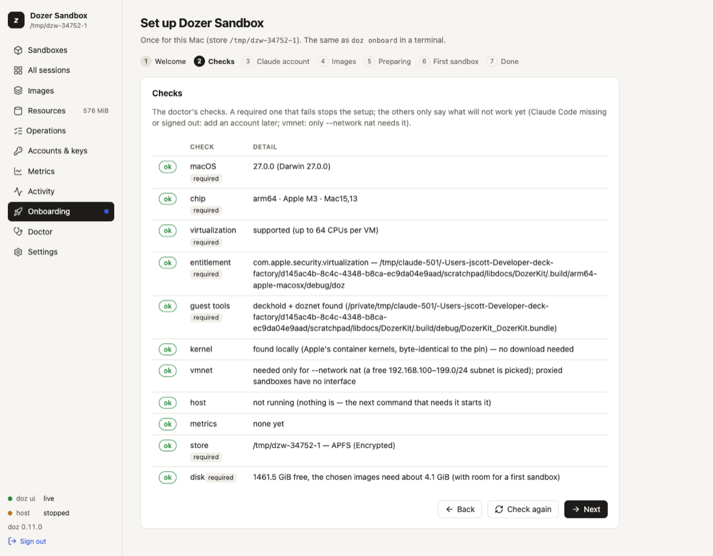

Chapter 3
Setting up this Mac
Setup — onboarding — is what you do once after installing: it checks your Mac, chooses and confirms what sandboxes may use as you (Access: a Claude account, GitHub, your SSH agent), explains workspace rules and lets you choose what they do, writes your settings and prepares the images your sandboxes start from.
On this page
Setup — onboarding — is what you do once after installing: it checks your Mac, chooses and confirms what sandboxes may use as you (Access: a Claude account, GitHub, your SSH agent), explains workspace rules and lets you choose what they do, writes your settings and prepares the images your sandboxes start from. You can do it in the terminal (doz onboard) or in the browser (the dashboard's setup wizard). Both do exactly the same thing, and both are safe to run again.
Concepts#
- An image is what a sandbox starts from: a prepared disk with Linux, a developer toolkit and, for the agent images, the agent. Preparing one downloads a base system and installs everything in a temporary VM — a few minutes, once. Every sandbox made from it is an instant copy. See Images and bases.
- Preparation runs in the host, not in your terminal. You can close the terminal or leave the wizard; it carries on. A sandbox started while its image is being prepared joins that preparation instead of starting another one.
- An account is how a sandbox's agent pays for its AI model: your Mac's Claude Code login, a long-lived token, or an API key. The secret stays on your Mac; a sandbox only ever sees a stand-in. See Agents and accounts.
- Access is every credential a sandbox may use as you — the Claude account, GitHub as you (GitHub) and SSH agent forwarding. Each is a choice of yours (GitHub and SSH are off until you choose them), and each is confirmed live when you choose it. A credential that can't be confirmed can be skipped: the choice is kept, marked not confirmed, and setup goes on. The choices are the defaults for new sandboxes;
doz accessand Settings › Access check them again later. - Workspace rules are two small files you can put in a project folder:
.dozignore(paths the agent must not use) and.dozreadonly(paths it may read but not change). Setup explains them and asks one question: should a.dozignorelock the paths it lists (still listed, but nothing can open them — the default) or hide them (not there at all)? See Workspace rules.
In the terminal#
doz onboardOn a terminal it asks; Enter always accepts the recommended answer.
Checks — the same checks as
doz doctor. The required ones stop setup when they fail: Apple silicon, macOS 26 or later, virtualization, the signed program, the store on an APFS disk with room for the chosen images, and a store path short enough. The rest only warn: Claude Code missing or signed out (you can add an account later), and the NAT network helper (only--network natneeds it).Access — what sandboxes may use as you, each offered and never done behind your back:
- Claude account: Use this Mac's login (the default when Claude Code is signed in here); an API key or a setup token (from
claude setup-token), pasted at a hidden prompt, checked with one tiny request and stored in your login keychain, then made the default; or Decide later — nothing changes. - GitHub as you: Off (the default), Read-only or Read and push — and where the token comes from: this Mac's
ghlogin, or a token you paste (best: a fine-grained one). - SSH agent forwarding: Off (the default) or On.
Each choice has a one-line consequence beside it. Then each is confirmed:
text ✓ Claude account mac confirmed — this Mac's Claude Code login (you@example.com), max ✓ GitHub as you read (gh login) confirmed — signed in as you — scopes: repo, read:org (from this Mac's gh login) ✗ SSH agent forwarding on not confirmed — this Mac has no ssh-agent to forwardA failure says why, and offers Skip (keep the choice, not confirmed —
doz accesschecks again later), Turn it off, or Check again. Setup is never blocked by it.- Claude account: Use this Mac's login (the default when Claude Code is signed in here); an API key or a setup token (from
Workspace rules — what
.dozignoreand.dozreadonlydo, in a few lines: the benefit (keep an agent out of your secrets, or stop it changing some files, without moving anything), and the consequences — lock keeps a path listed but unreadable, so the agent knows it exists; hide removes it altogether; only a folder with one of the files changes, and nothing costs anything without them; the first look through many files is a little slower when rules exist; and it is not a security boundary (root in the sandbox can get round it). Then: Lock (recommended) or Hide — the default for every sandbox (the settingworkspace.ignore_mode; a sandbox can choose its own).Images — Claude Code is prepared by default; pi and the lab shell are optional.
Settings —
doz.toml(every setting at its default, plus your answers) andagent-prompt.mdbeside it, each written only if it doesn't exist yet. Your Access and Workspace rules answers are then set in it — only the ones you chose.Preparing — the Linux kernel, a small boot disk, the base system download and the install. Progress shows as steps (Step 3 of 9), with download bars and the last lines of the installer's output. Once this Mac has prepared an image, later preparations show time estimates.
Press Ctrl-C to leave it running in the background. Then:
doz onboard --status # show the images and follow a preparation that is running
doz onboard --cancel # stop the images being preparedWhen every chosen image is ready, the store is marked as set up — even if you'd detached.
Without questions (scripts)#
doz onboard --images claude-code,pi --account mac --yes
doz onboard --all-images --yes # claude-code, pi and lab (15 minutes or more the first time)
doz onboard --no-images --account later --yes
doz onboard --account setup-token --account-name work --plan max --secret-stdin --yes < token.txt
doz onboard --no-images --account mac --github read --ssh-agent on --yes
doz onboard --no-images --account later --ignore-mode hide --yes
doz onboard --no-images --account later --github push --github-key-stdin --yes < github-token.txt--yes, --json, or no terminal: nothing is asked and the defaults are taken. A key or token is read from standard input only with --secret-stdin (--github-key-stdin for a GitHub token); it is never a command-line argument. Each credential chosen is still confirmed; one that can't be is skipped with a note and the exit code stays 0. Without --github / --ssh-agent / --ignore-mode, --yes leaves those settings exactly as they are.
| option | what it does |
|---|---|
--images LIST | The images to prepare, comma-separated: claude-code, pi, lab. |
--all-images · --no-images | All three · none now (each is prepared the first time it's used). |
--account mac|api-key|setup-token|later | Answer the account step (the Claude Code checks are then skipped). |
--account-name NAME · --plan PLAN · --force | For a key or token: its name (default work), a token's plan (max, pro, team, enterprise), replace an existing account. |
--github off|read|push | Answer "GitHub as you" (the setting defaults.github). |
--github-source gh|key · --github-key-stdin | Where the GitHub token comes from: this Mac's gh login, or a token read from standard input (kept in the login keychain as doz-github). |
--ssh-agent on|off | Answer "SSH agent forwarding" (the setting sandbox.ssh_agent). |
--ignore-mode lock|hide | Answer the Workspace rules step (the setting workspace.ignore_mode). |
--status · --cancel | Follow · stop the preparation. |
In the dashboard#
doz uiA store that was never set up opens on the setup wizard, in a window over the dashboard (its steps across the top; ✕ or Escape closes it, asking first once you have chosen something):
- Welcome
- Checks — updating live; a failing required check stops here, with Check again.
- Access — the Claude account (this Mac's login when it is signed in; an API key or setup token in a masked field; or Decide later), GitHub as you (off, read-only, read and push — from this Mac's
ghlogin or a token in a masked field) and SSH agent forwarding, each with its consequence. Next confirms each one: confirmed with what was found (for GitHub, signed in as LOGIN and the token's scopes, or how many repositories a fine-grained token can see; for SSH, how many keys the agent has), or not confirmed with the reason and Skip · Turn it off · Check again. Skipping keeps the choice and moves on. - Workspace rules — the same description as in the terminal, and the same choice: Lock (recommended) or Hide. It is saved with the settings when you leave the Images step.
- Images — a checklist with each image's download size, time estimate and disk space.
- Preparing — a card per image with its progress. Continue in the background lets you use the dashboard meanwhile (the preparation shows under Operations); Cancel preparation stops it.
- First sandbox (optional) — pick the agent; it suggests a name (
claude-sandbox) and a project folder (~/dozer-sandbox-workspaces/claude-sandbox, made if it doesn't exist). Choose… opens the Mac's own folder picker. Or pick Isolated to share no folder. - Done — what was written where, and your projects folder (
~/dozer-sandbox-workspaces): each new sandbox from Quick add, New sandbox ordoz newgets its own folder there. Settings › Choose… moves it.

You can run the wizard again at any time: Onboarding under Setup in the sidebar (with a dot beside it until the store is set up), or Doctor › Run onboarding again.
Checking access again#
doz access # each credential, confirmed now
doz access --no-check # the last confirmation only
doz access set --github push # change a choice (and confirm it)
doz access set --ssh-agent offIn the dashboard: Settings › Access shows each credential as last confirmed, with Check again; the choices themselves are the settings defaults.github, github.credentials and sandbox.ssh_agent further down the page.
What was written where#
| what | where |
|---|---|
| Your settings | ~/.config/dozer-sandbox/doz.toml (under $XDG_CONFIG_HOME if set) — see Settings reference |
| Your agent prompt template | agent-prompt.md beside it — everything inside an HTML comment, so it changes nothing until you write your own text. See Agents and accounts |
| The store (images, sandboxes) | ~/Library/Application Support/dozer-sandbox |
| Accounts with a secret | your login keychain, doz-claude:NAME (tokens) or doz-anthropic:NAME (API keys) |
| A GitHub token you gave | your login keychain, doz-github |
| The last access check | access.json in the store — states and reasons, never a secret |
Settings#
| key | default | what it does |
|---|---|---|
defaults.image | lab | The image doz up NAME, doz init and the dashboard's New sandbox use when you don't name one. Onboarding sets it to the image you chose. |
defaults.projects_dir | ~/dozer-sandbox-workspaces | Your projects folder: Quick add, doz new and New sandbox make each new sandbox's folder in it. doz onboard says where it is; the dashboard's Settings › Choose… or doz config set defaults.projects_dir DIR moves it. |
defaults.account | mac | The account of a store that hasn't chosen one. doz account default decides for a store once it has. |
defaults.github | off | "GitHub as you" for new sandboxes: off, read or push. The Access step's choice. |
github.credentials | gh | Where the GitHub token comes from: gh (this Mac's login), key (a token you gave), off. |
sandbox.ssh_agent | off | Forward this Mac's ssh-agent into sandboxes (github.com only). |
workspace.ignore_mode | lock | What a .dozignore does to the paths it lists: lock or hide. The Workspace rules step's choice. |
ui.allow_secret_entry | true | The dashboard may take an API key or setup token in a masked field. false: it shows the doz account add command instead. The dashboard can turn this off, never on. |
images.claude_code_version · images.pi_version | latest | Which agent version an image is prepared with. See Agents and accounts. |
Limits and notes#
- Setup never signs you in to Claude Code, and never touches Claude Code's own refresh token.
- Re-running
doz onboardis safe: it re-checks, leaves existing settings files alone and prepares only what is missing. - The first preparation needs the internet: it downloads a base system (about 380 MB for the Claude Code and pi images;
doz base lslists each base's download) and the agent.
Troubleshooting#
| symptom | what to do |
|---|---|
| A required check fails | Read its message; doz doctor shows every check with what to do. |
| Preparation fails part way | doz onboard --status shows the failed step with its last output lines. Run doz onboard again: it continues with what's missing. |
| "latest" can't be resolved (offline) | Set an exact agent version: doz config set images.claude_code_version 2.1.227. |
| The wizard shows commands instead of a key field | ui.allow_secret_entry is off: use doz account add NAME --api-key in a terminal. |
| GitHub not confirmed: gh is not logged in | Run gh auth login on the Mac, then doz access — or give a token: doz access set --github-key. |
| SSH not confirmed: no ssh-agent or no keys | Start an agent and ssh-add your key on the Mac, then doz access. Or turn it off: doz access set --ssh-agent off. |
| You want to start over | Uninstall, then install and onboard again. |
Edit this page on GitHub · Chapter 3 of 25